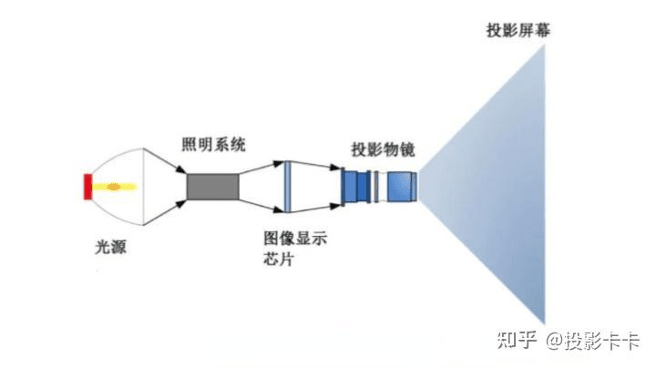
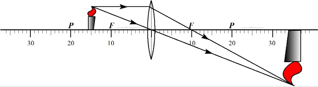
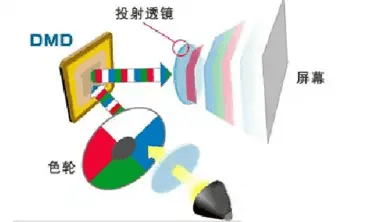

投影仪原理简单记录
如下图所示，中间的图像显示芯片先理解成显示屏，然后投影物镜就是一个放大镜。

投影物镜本质也是利用凸透镜成像原理。即物体到透镜距离在 1 倍焦距到 2 倍焦距之间时，成像效果是倒立、放大的实像。

中间的芯片有用 LCD 显示屏的方向，不过主流用的叫做DMD芯片，下面是 AI 的回答：
DMD 芯片和 LCD 的区别
这是一个非常棒的洞察，但答案很微妙：不完全一样，但从最终观看效果来说，你可以这么“类比”理解。
让我们来详细拆解这个“像显示屏”的感觉，以及它和LCD、OLED等真实显示屏的本质区别：
相似之处：为什么你会觉得它“像显示屏”？
- 像素化结构：DMD芯片上确实有数百万个规则排列的微镜（像素），每个都独立控制。
- 显示图像：当它工作时，芯片表面确实呈现出一个由明暗光点组成的图像。
- 需要光源：和LCD屏需要背光一样，DMD也需要外部光源照射才能被看到。
所以，如果你在投影仪开机但镜头被挡住的情况下，凑近去看被照亮的DMD芯片表面，你确实会隐约看到一个由无数细小光点组成的画面。这给你一种“它在显示画面”的直观感受。
核心区别：物理本质完全不同
这才是理解DMD的关键。你可以把它想象成两种完全不同的绘画方式：
| 特性 | 真正的显示屏 (如LCD, OLED) | DMD芯片 |
|---|---|---|
| 发光原理 | 主动发光或透光。 LCD：液晶像快门，控制背光透过。 OLED：每个像素是自发光二极管。 |
被动反射。它本身不发光，只是一个反射面。微镜只改变入射光的方向。 |
| 核心动作 | “透”或“发”光。像素通过改变自身光学性质（透光率、发光强度）来产生不同亮度的光。 | “扔”光。像素像一个小投手，要么把光精准“扔”向镜头（开），要么“扔”向散热器（关）。 |
| 信息载体 | 光强。每个像素直接输出不同强度的光。 | 时间占比。每个像素通过“开”和“关”的时间比例（占空比）来模拟灰度。 |
| 可视性 | 在任何角度，只要有光从屏幕发出或透出，你就能直接看到完整图像。 | 只有在一个非常特定的角度（即投影镜头的方向），你才能看到组成图像的光线汇聚。从其他角度看，芯片只是一片均匀反光或暗淡的表面。 |
一个更精准的比喻
- 显示屏比喻：像一个由无数个微型彩色灯泡组成的墙面。灯泡自己发光，你在房间任何角落都能看到这面墙上的画。
- DMD芯片比喻：像一个由无数个微型镜子组成的墙面。有一盏巨大的探照灯（投影仪光源）照亮这面镜子墙。每面镜子根据指令，要么把光反射到你眼睛所在的唯一一个观察孔（投影镜头），要么反射到别处。只有当你把眼睛贴在那个观察孔上看时，才能看到一幅完整的画。 从旁边看，这面镜子墙只是亮晶晶的一片。
因此，DMD芯片的本质不是一个“显示终端”，而是一个“光路调制器”或“光路由器”。 它的首要任务不是让人眼直接观看，而是高效、准确地将来自光源的光，按图像信息重新分配并导向投影镜头。
为什么这个区别如此重要？
因为正是这种“反射调制”而非“直接显示”的特性，赋予了DLP投影技术几个关键优势：
- 超高对比度：“关”状态的像素将光完全反射到吸光器，可以实现近乎纯黑的画面。
- 高速响应：微镜的机械切换速度极快，无拖影。
- 高光效：光路简洁，光能利用率高。
- 长寿命：DMD本身是反射式，不直接承受光源的高温高热，芯片寿命很长。
结论：
你可以概念上将DMD理解为一个“需要用强光从侧面照才能看见的、反射式的单色显示屏”，这有助于建立直观印象。但从物理和工作原理上讲，它是一个高速、精密的二进制光开关阵列，其设计初衷是服务于投影光学系统，而非用于直接观看。 这种根本区别，正是工程学的精妙所在——通过不同的路径，实现了“呈现图像”的相同最终目的。
配合下面的图理解即可，剩下的就是光源有各种区别，还有彩色的合成等细节了，太细节了就不了解了。
